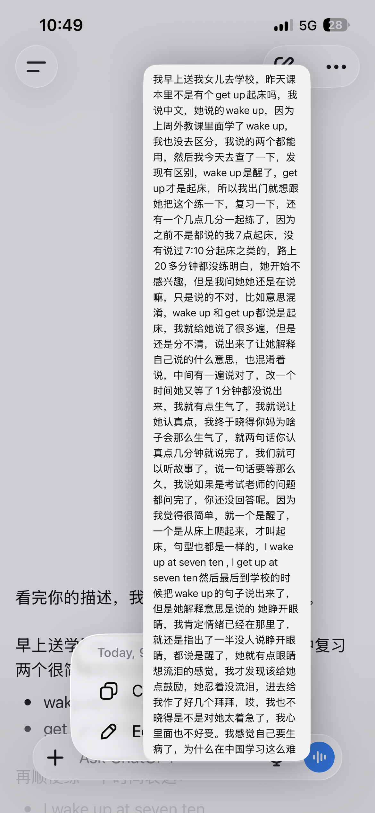

早上送女儿去上学，因为马上要一年级下学期的乐考了，这几天各科老师都布置了一些回来的作业，包括语文让每天回来做一套类似的考试试卷，数学昨天也让写什么排序，英语让复习课本单词，昨天全部练完了已经9点过了。有几个单词没有掌握。
早上出门
早上出门的时候，我就想到复习一下英语单词，一个原因是因为昨天复习的时候关于 起床，课本里是说的get up，但是最近的外教课上在学wake up，昨天考 起床 对应的英文 她就说的是wake up，我其实也没有搞清楚，我就说课本里的是get up，就相当于还有两说法都可以吧， 但是今天早上我醒了后我去查了下，起床就是get up，wake up是醒了的意思，还有我几点醒，我几点起床，之前都说的是整点，我就想教他一下 用7:10这种非整点怎么说，所以我就想把这两个知识点和她练一下。
路上的学习过程
我在出门等电梯到上车的途中就跟她说了下，但是女儿似乎不感兴趣。我开车后，就给女儿说了 wake up是醒来的意思，但是并不代表起床了，因为睁开眼睛就是醒了，但是起床要有一个从床上爬起来的动作，要用get up，解释完了后我就想考察她说两个句子， 把这两个单词用在句子里说一下，就算掌握了，然后就能给她放故事，因为她很喜欢听故事。
但是过程却并不是很顺利，I wake up at 7:10，I get up at 7:10，然后加上每一天就是 I wake up at 7:10 everyday 和 I get up at 7:10 everyday。开始说正确了一次，然后我就让把时间改成7:40，结果她说错了，我当时就想是不是她不认真，就有点生气了。
最后说出来了让她解释自己说的是什么意思，她也会说混，比如 wake up她也说起床，get up 也说起床，我就骂了女儿，我说终于知道为什么她妈妈对她那么生气，因为语文、数学也有类似的问题，就是父母觉得她应该掌握了，但是她却一点不熟练。这种落差让父母很难受。

和AI讨论今天女儿的问题
到学校了
快到学校的时候，我看得出来她已经很认真的在练习怎么说这两个单词对应的句子了，最后也算是说出来了，在车子停了后，走路到学校的时候，她说出了I wake up at 7:20,但是解释的时候 她说的意思是：我7:20分睁开眼睛。起是我知道她已经理解了，但是我因为路上情绪已经被点燃了， 就觉得她不认真，所以我还是用批评似的口吻给她说：我们一般不说 睁开眼睛，而是说醒了。
我说完了之后看得出来她的心情很低落，眼泪都快要流出来了，我马上发现了自己太严厉了，我在用一个自己的标准去衡量他。这还是快一年上学的时间以来我第一次看到她 心情失落的去上学，在进校门之后 走一会 就回过头来给我挥手说再见，我这时候心里很不是滋味，因为我觉得自己做的不对。 回来的路上心里沉甸甸的，很难受。我不知道是这个教育制度把小孩逼的这么难还是家长的情绪让教育女儿的过程这么难。
回到家后
回到家后，我问了chatgpt，AI说的很客观，早上的练习女儿说对过一次，起是已经说明她已经知道了，只是还不熟练，但是我对她的要求是知道=熟练，还有我生气的样子可能才是女儿害怕的，这种害怕对她的打击才是最大的，这时候我觉得自己变成了一个自己曾经讨厌的人。 我给老婆说了，我感觉自己要死了，心情很不好受。老婆倒是不生气的时候都很会想，她说了一个观点：都是因为父母本身就没有过好自己的生活，才会这么容易就生气。对小孩就缺少了耐心。但是老婆在教育孩子学习的时候是比我还要极端的，我在家里每天晚上听老婆和女儿的辅导作业过程简直是一场折磨。
客观上来说，我承认老婆说的这个观点。我和老婆都有自身的问题，我在创业压力很大，老婆的工作也受很多同事的气，最近一两周已经2次加班到快12点。这不是一种轻松的工作状态。
所以问题又回到了，该怎么样才能把自己的问题解决了，结论是只有成功。让自己闲下来，才能有好的精力，耐心。才会耐心的一遍一遍的教孩子，正确的看待孩子学习的客观规律。
我不禁发出了这样的感叹，中国人的生活真的太难了，社会环境、工作环境、教育环境、家庭环境，没一有样是轻松的，我很羡慕欧州、澳洲、新西兰的轻松的生活环境，我想移民，我不想要一生都在这样的环境里生活，我更不愿意让我的子女以后也这样压力的生活。 我要把孩子带出去看看，这个世界还有另一种生活方式。